Solid Knitting
ACM Transactions on Graphics (SIGGRAPH 2024)

We introduce solid knitting, a new fabrication technique that combines the layer-by-layer volumetric approach of 3D printing with the topologically-entwined stitch structure of knitting to produce solid 3D objects. We define the basic building blocks of solid knitting and demonstrate a working prototype of a solid knitting machine controlled by a low-level instruction language, along with a volumetric design tool for creating machine-knittable patterns. Solid knitting uses a course-wale-layer structure, where every loop in a solid-knit object passes through both a loop from the previous layer and a loop from the previous course. Our machine uses two beds of latch needles to create stitches like a conventional V-bed knitting machine, but augments these needles with a pair of rotating hook arrays to provide storage locations for all of the loops in one layer of the object. It can autonomously produce solid-knit prisms of arbitrary length, although it requires manual intervention to cast on the first layer and bind off the final row. Our design tool allows users to create solid knitting patterns by connecting elementary stitches; objects designed in our interface can—after basic topological checks and constraint propagation—be exported as a sequence of instructions for fabrication on the solid knitting machine. We validate our solid knitting hardware and software on prism examples, detail the mechanical errors which we have encountered, and discuss potential extensions to the capability of our solid knitting machine.
Paper
Acknowledgements
Part of this work was supported by the INNO-vation Program of the Ministry of Internal Affairs and Communications, Japan, the 100BANCH GARAGE Program of Panasonic Holdings Corporation, and the MITOU Advanced Program of the Information-technology Promotion Agency, Japan. This material is partially based upon work supported by the National Science Foundation under Award No. 1955444, and upon the master's thesis and patent of our first author [Hirose 2014, 2022].
Bibtex
@article{Hirose:2024:SK,
author = {Hirose, Yuichi and Gillespie, Mark and Bonilla Fominaya, Angelica M. and McCann, James},
title = {Solid Knitting},
journal = {ACM Trans. Graph.},
volume = {43},
number = {4},
year = {2024},
publisher = {ACM},
address = {New York, NY, USA},
doi = {10.1145/3658123},
month = jul,
articleno = {88},
pages = {1--15}
}
Supplement: Solid Knitting by Hand
Selected Figures
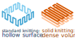
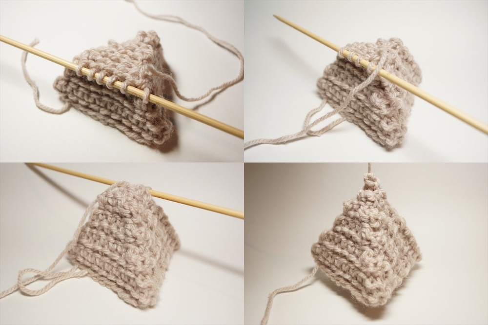
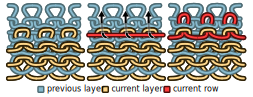
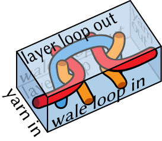
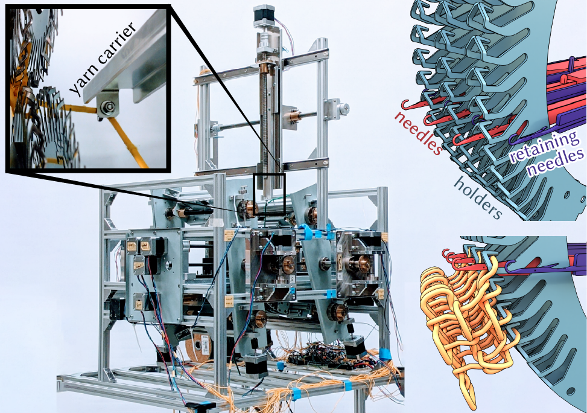

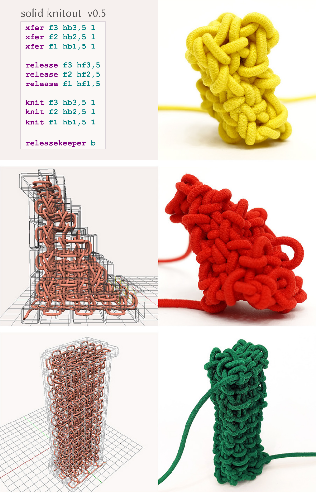

Unlike standard knitting, which makes hollow surfaces, solid knitting makes dense volumes by layering knit sheets---much as 3D printers layer plastic sheets.
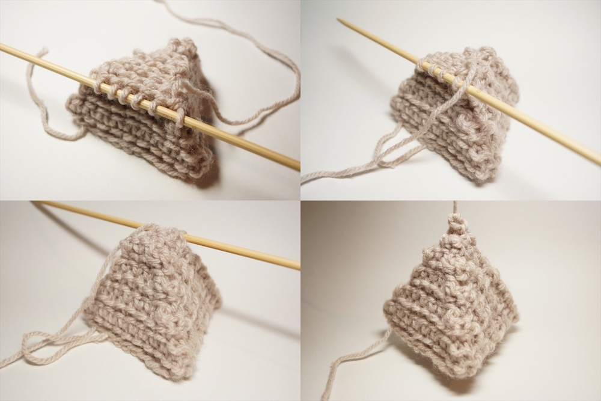
Solid knitting builds up objects using layered sheets of fabric.
(this example was fabricated by hand)
(this example was fabricated by hand)
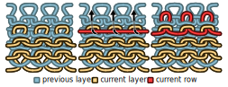
Each layer of a solid-knit is made of rows of stitches (left). To form a new row, one runs yarn across the latest row of loops on the top layer (center) and pulls the yarn through both these loops and loops from a row one layer down (right).
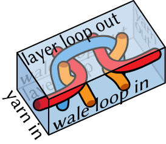
Just as a traditional knit stitch can be seen as a rectangular tile, a solid knit stitch can be seen as a box-shaped tile attached to six neighbors. It is connected to its left and right neighbors via the yarn and connected to its neighbors in the other two directions by interlocking loops.
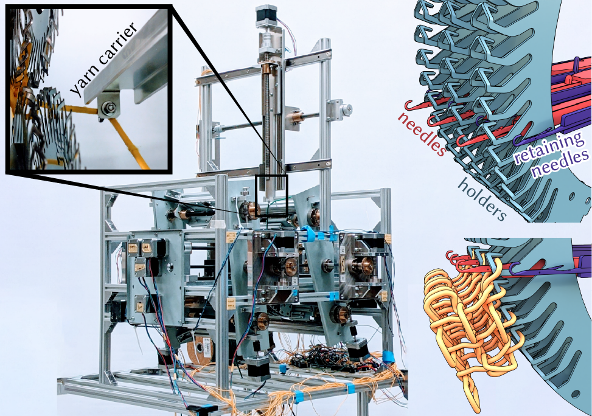
The solid knitting machine has two needle beds, which are each made up of holders, needles, and retaining needles (top right). The holders have space to hold onto every loop in a layer of solid knitting (bottom right). The machine also has a single yarn carrier to feeds in new yarn (top left).
Knitting the first row of a new layer on the solid knitting machine:
(1) the machine first tucks a new span of yarn beneath the holder.
Then, (2), it transfers a loop from a needle on the opposite bed onto the holder, where it can be knit through without being dropped.
Next, (3), it rolls the holder upwards to access the next row of held loops,
and then, (4), transfers a loop from this row onto the needle.
Finally, the machine performs a knit operation, (5) pushing this needle forward, grabbing onto the new span of yarn tucked beneath the holder hook, and (6) retracting to pull the yarn through the loop on the holder and the loop on the needle.
Note that the loop on the holder is retained to be knit through again in the subsequent layer, while the loop that was on the needle is released. (7) shows the completed solid knit stitch.
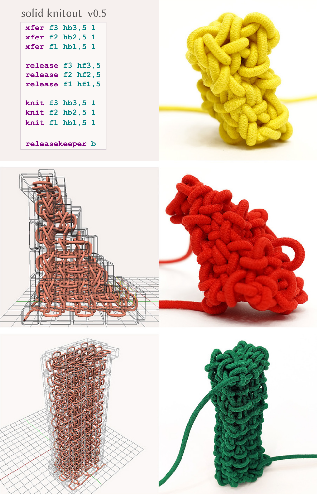
Rectangular and triangular prisms designed in our software and constructed by the solid knitting machine.
Left: a model of sandals is converted into a solid knitting pattern by voxelizing with rectangular elements whose aspect ratio matches the stitches then slicing into layers. Right: Solid-knit sandals constructed by hand from this pattern.